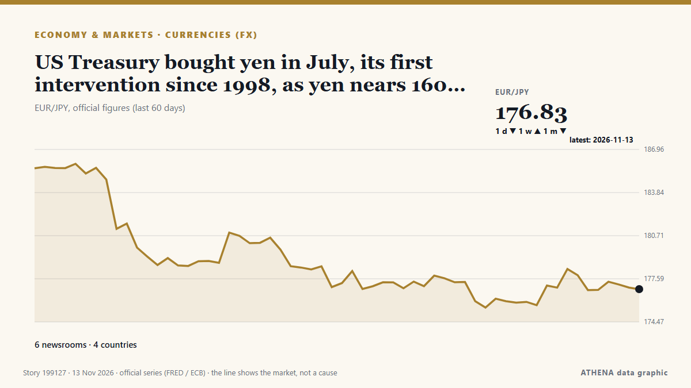

Economics, Finance & Markets
SponsoredPresented by  Cybernetics and Artificial Intelligence Lab Welcome to the Cybernetics and Artificial Intelligence Laboratory, established at the Department of Business Administration of the National and Kapodistrian University of Athens. The lab is headed by Professor Dimitrios Thomakos. The lab aims to do research that can be published in top venues. Our research uses tools and methods of Artificial Intelligence, and lies in the following areas: - Forecasting - Decision making - Cyber security - Finance We are always looking forward to collaborating with exceptional students!
Cybernetics and Artificial Intelligence Lab Welcome to the Cybernetics and Artificial Intelligence Laboratory, established at the Department of Business Administration of the National and Kapodistrian University of Athens. The lab is headed by Professor Dimitrios Thomakos. The lab aims to do research that can be published in top venues. Our research uses tools and methods of Artificial Intelligence, and lies in the following areas: - Forecasting - Decision making - Cyber security - Finance We are always looking forward to collaborating with exceptional students!
Market monitor - official figures
Which way official market measures are moving - up, down or flat - with the latest official figure and its date, and the market news ATHENA verified alongside. Official figures, not live prices.
Energy
| 1 day | 1 week | 1 month | Official figure | |
|---|---|---|---|---|
| Brent crude | ▲ | ▲ | ▼ | $92.14/bblOfficial data of 11 Nov 2026 |
| WTI crude | ▬ | ▼ | ▼ | $89.62/bblOfficial data of 11 Nov 2026 |
| US natural gas (Henry Hub) | ▬ | ▲ | ▼ | $3.00/MMBtuOfficial data of 11 Nov 2026 |
| European natural gas (1 month · 3 months · 12 months)(1M · 3M · 12M) | ▲ | ▲ | ▲ | $25.49/MMBtuOfficial data of 1 Sep 2026 |
| Coal (Australia) (1 month · 3 months · 12 months)(1M · 3M · 12M) | ▲ | ▲ | ▲ | $153.84/tOfficial data of 1 Sep 2026 |
Food
| 1 month | 3 months | 12 months | Official figure | |
|---|---|---|---|---|
| Wheat | ▲ | ▲ | ▲ | $246.85/tOfficial data of 1 Sep 2026 |
US stock markets
| 1 day | 1 week | 1 month | Official figure | |
|---|---|---|---|---|
| S&P 500 | ▼ | ▲ | ▼ | Direction only (index © Cboe)Official data of 12 Nov 2026 |
| Nasdaq Composite | ▼ | ▲ | ▼ | Direction only (index © Cboe)Official data of 12 Nov 2026 |
Rates, risk and the dollar
| 1 day | 1 week | 1 month | Official figure | |
|---|---|---|---|---|
| US 10-year Treasury yield | ▲ | ▲ | ▼ | 5.10 %Official data of 12 Nov 2026 |
| Market volatility (VIX) | ▲ | ▼ | ▲ | Direction only (index © Cboe)Official data of 12 Nov 2026 |
| US dollar, broad index | ▲ | ▲ | ▲ | 121.88Official data of 6 Nov 2026 |
The euro against other currencies
| 1 day | 1 week | 1 month | Official figure | |
|---|---|---|---|---|
| EUR/USD | ▼ | ▼ | ▼ | 1.1052 USDOfficial data of 13 Nov 2026 |
| EUR/GBP | ▬ | ▲ | ▼ | 0.8356 GBPOfficial data of 13 Nov 2026 |
| EUR/CHF | ▲ | ▲ | ▼ | 0.9266 CHFOfficial data of 13 Nov 2026 |
| EUR/JPY | ▬ | ▬ | ▼ | 176.83 JPYOfficial data of 13 Nov 2026 |
| EUR/CNY | ▼ | ▼ | ▼ | 7.3738 CNYOfficial data of 13 Nov 2026 |
| EUR/TRY | ▬ | ▼ | ▲ | 55.667 TRYOfficial data of 13 Nov 2026 |
| EUR/NOK | ▬ | ▲ | ▼ | 10.5695 NOKOfficial data of 13 Nov 2026 |
Sources: US Energy Information Administration (oil, US gas), IMF (European gas, coal, wheat), US Treasury and Federal Reserve (10-year yield, dollar index) Cboe (VIX), S&P Dow Jones Indices (S&P 500) and Nasdaq (Nasdaq Composite), via FRED (Federal Reserve Bank of St. Louis); euro reference rates © European Central Bank. Figures are the latest official values with their date - not live prices. Directions are computed by ATHENA.
Crypto, ETFs and shares in the news
- Stocks sway as Wall Street heads for winning week after several turbulent days Risk 5.0 13 Nov
- Bitcoin value drops below $70,000 first time since August 20 Risk 1.1 13 Nov
- Bitcoin holds below $70K as stocks slip despite a cooler US PPI print Risk 0.0 13 Nov
- Bitcoin slides below $70 000 as inflation concerns hurt crypto Risk 2.5 13 Nov
- Nscale updates IPO prospectus that shows widening loss Risk 0.9 13 Nov
- New Anthropic job listing offers $405,000 to land natural gas for its post-IPO data center buildout Risk 0.0 13 Nov
- India's Paytm gets preliminary RBI nod for wallet licence; shares hit record high Risk 0.0 13 Nov
- Anthropic targets valuation of up to $1.4 trillion for blockbuster IPO Risk 2.2 13 Nov
- National Stock Exchange of India deploys direct-to-chip liquid cooling at data center Risk 0.0 13 Nov
- Dow Jones futures fall amid Fed rate hike fears, Nvidia leadership shakeup, PPI data eyed Risk 2.0 13 Nov

Currencies (FX)US Treasury bought yen in July, its first intervention since 1998, as yen nears 160 again
The report confirms that the US is a willing partner in yen support, not just a bystander. from investingLive (ForexLive)
| 1 Nov | 72 |
|---|---|
| 2 Nov | 136 |
| 3 Nov | 124 |
| 4 Nov | 114 |
| 5 Nov | 118 |
| 6 Nov | 95 |
| 7 Nov | 42 |
| 8 Nov | 65 |
| 9 Nov | 155 |
| 10 Nov | 130 |
| 11 Nov | 127 |
| 12 Nov | 102 |
| 13 Nov | 46 |
| 14 Nov | 0 |
Stocks sway as Wall Street heads for winning week after several turbulent days
U.S. stocks are climbing Monday after oil prices eased back. from The Korea Times
Bitcoin slides below $70 000 as inflation concerns hurt crypto
Fell as much as 4.4% to $68 297, its lowest level since August 19. from Moneyweb
Treasury Secretary Scott Bessent moves into military housing due to Iranian threats
Treasury Secretary Scott Bessent has moved out of his home in Washington, D.C., and onto a military base out of concern for his safety, including Iranian threats to his life, officials said. from CBS News (World)
Mortgage applications rise 6.2% as rates fall to 7.21%
Refinances rose 5% during the week but stayed 57% below year-ago levels. from HousingWire
$400 Million In 18 Months: How North Korean Hackers Stole Money Using Images
The targets are issued invitations from genuine contacts they have previously interacted with, but whose social media and communication accounts have been compromised and whose images have been… from NDTV
Brazil October Inflation Slows to 0.14%
Brazil's IPCA inflation slowed to 0.14% in October, below forecasts, as power and air fares fell. from The Rio Times
Wheelock Place renamed Landmark Orchard after Hongkong Land acquisition
The Orchard Road property has been known as Wheelock Place since 1996. from CNA (Channel NewsAsia)
Britain eyes welfare cuts to tackle surge in youth unemployment
The Labour government will receive proposals next week to restrict youth sickness and disability benefits to fund back-to-work programmes for nearly one million young people. from Free Malaysia Today
Passenger van plunges into river in northern Pakistan, killing 11 people
Officials say a passenger van veered off a mountainous road and plunged into a river in northern Pakistan, killing 11 people and injuring three others. from ABC News (International)
US existing home sales fall to lowest level since 2010
NEW YORK: Sales of previously owned US homes dropped to a more than 16-year low in October due to the drag from higher lending rates, a US realtors association said Thursday. from New Straits Times
United Kingdom inflation: Deutsche Bank sees further upside
Deutsche Bank economists Sanjay Raja and Maui Brennan expect UK inflation to move higher in October, driven by energy, tobacco and modest food and services gains. from FXStreet
Gold and silver prices rise on commodity markets
Gold and silver prices have risen on the COMEX commodity exchange in New York. from AzerNews
Xeneta Forecasts 30% Drop in Global Container Freight Rates by 2027
Xeneta predicts a 30% decline in global container spot rates by 2027, driven by increased ship deliveries and capacity surplus amid Middle East risks. from SeaNews Türkiye
Brazil Interest Rate Cuts Stall on US Yields
Brazil's central bank has cut five times this year, but higher US rates and 4.58% inflation shrink its room. from The Rio Times
Israeli army, illegal settlers carry out over 1,180 arson attacks in occupied West Bank
The attacks began when Palestinians set fire to an Israeli vehicle near Kibbutz Mitzpe Shalem. from The Jerusalem Post
Finance Minister Details 8 Pillars That Will Underpin Ghana’s New Economy
By: Franklin ASARE-DONKOH Minister of Finance, Dr. from GBC Ghana Online
Klaipėda seeks tenants to co-fund €1 billion southern port expansion
Klaipėda, Lithuania (Ports Europe) November 13, 2026 – The Klaipėda State Seaport Authority has launched a tender to select tenants for 100 hectares of new land in the south of the port, a project… from Ports Europe
USS George H.W. Bush families told to prepare for year-long deployment
Families of sailors on the USS George H.W. from Military Times
Anthropic founders’ stakes are worth US$18 billion apiece at IPO price
Seven insiders are set to sell around US$250m in shares and keep total voting control. from New Zealand Herald
Tuchel committed to England until Euro 2028
Thomas Tuchel said his contract had no release clause and he intends to stay until the 2028 European Championship. from Free Malaysia Today
France denies entry for Israeli settler leader: What to know
The head of Israel's Samaria Regional Council settler organization claims that France turned him back at the Paris airport. from Al-Monitor
Paraguay partially refunds Ueno Bank depositors after collapse
Paraguay's Central Bank said Wednesday it had partially returned savings to all eligible Ueno Bank depositors, following the lender's collapse last week. from France 24 English
Nigeria’s president launches re-election manifesto amid high living costs
By: Nana Karikari, Senior International Affairs and Political Analyst Nigerian President Bola Ahmed Tinubu launched his re-election manifesto on November 10, seeking to convince cost-weary voters… from GBC Ghana Online
AI Powers UK Economic Growth In Third Quarter
The July-September reading for gross domestic product was an acceleration from 0.5 percent growth in the second quarter, the Office for National Statistics said in a statement. from Channels TV
Metro Bank up for sale after turnaround pays off
The high street lender – which has 78 branches across the UK – recently notched up the most profitable half-year in its history. from Evening Standard (London)
ANZ boss warns global markets in 'dangerous situation' as interest rates rise
ANZ boss Nuno Matos says he sees a "dangerous situation" of rising rates and frothy equity markets. from ABC News Australia
Pyes Pa fatal crash: Driver dies after vehicle crashes down bank
The Serious Crash Unit attended, and inquiries are underway. from New Zealand Herald
Blackstone plants new flag in Dubai as Gulf wealth draws Wall Street
World’s largest alternative asset manager opens new DIFC office as it steps up its pursuit of Gulf investors, with more than 40 regional distribution partnerships already in place. from Arabian Business
S&P 500, Nasdaq rise as CoreWeave results ease AI spending worries
The CBOE Volatility Index, Wall Street's fear gauge, fell for the fourth straight session after CoreWeave said it would become profitable in the first half of 2028. from Free Malaysia Today
KOGAS Q3 net more than triples on equity gains, lower costs
South Korean LNG importer Kogas said its gas sales decreased by 13.5 percent in October compared to last year. from LNG Prime
UK economic growth expected to have picked up amid AI and defence drive
The Office for National Statistics was publishing the latest gross domestic product figures on Thursday. from The Irish News (Belfast)
Anthropic targets valuation of up to $1.4 trillion for blockbuster IPO
A visitor at Anthropic’s Code W/ Claude event in San Francisco, May 7, 2026. from The San Juan Daily Star
Qantas to outsource 850 local jobs with most roles moving to India
The Australian airline said the move was aimed at modernising its IT systems and noted the impact of AI. from BBC Business